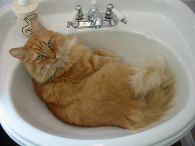
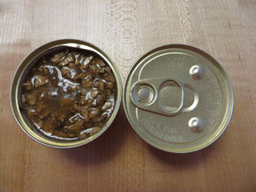

Unlike dogs and humans, which are omnivores and gain nutrition from both plants and meat, cats are carnivores and primarily get all of their nutrients from animal products. Scientific studies have shown that when cats in the wild live on prey (i.e., animals, such as mice, that they hunt and kill), their diet is primarily protein (55%), some fat (45%), and only 1-2% carbohydrates. The reason for this is that the methods by which cats’ bodies break down and metabolize foods are not suited for digesting starches and sugars. Thus, if they eat a diet high in carbohydrates, they can’t break down and absorb those nutrients nearly as well as a diet higher in animal protein.

All Meats are not Equal
Some researchers advocate avoiding fish-based diets for cats because of potential risk for thyroid disease. Fish-based diets can also lead to extreme food favoritism, preventing you from switching to any other kind of diet in the future. Fish-based diets can sometimes have an imbalance of phosphorus and magnesium. Feeding canned tuna exclusively to cats can also cause vitamin E deficiency.
Additional Nutritional Needs of a Cat
In addition to cats’ protein requirements, they are also deficient and/or can’t make certain amino acids and nutrients needed for their survival. Thus, it is necessary for cats to get them from food. These include the amino acids arginine, taurine, methionine, and cysteine, as well as vitamins such as vitamin B (niacin) and vitamin D. When researching commercial cat foods, it is important to ensure these are part of the ingredients. Many of these important amino acids and nutrients are primarily obtained from animal products (e.g., liver, protein, fat) which further highlights the importance of a diet high in animal protein. If you are unsure if your cat’s current diet contains these nutrients, ask your veterinarian.
Water
Another way cats tend to differ in nutritional needs is their water intake. The domestic house cat is believed to be descended from wild desert cats. They can survive on less water than some other animals, such as dogs. This is great for survival, but can be a problem long term because they have less of a drive to seek water when their body needs it. This lack of water can lead to a variety of issues over time. For example, if cats don’t get enough water, they produce urine that is more concentrated with the body’s waste materials, and this can lead to problems such as urinary tract issues (e.g., feline lower urinary tract disease, FLUTD, idiopathic cystitis).
This information leads many researchers to recommend canned food because of its higher water content (70%-80% water) over dry food (10%-12% water). Other ways to ensure your cat gets enough water include offering more options for drinking, such as multiple water bowls throughout the house, a kitty water fountain, or letting a faucet drip on occasion to entice them to drink.
Canned Food vs Dry Kibble

Overwhelmingly, research points to a recommendation of canned commercial diets (wet food), high in protein and low in carbohydrates, as the best type of diet. Veterinarians have also frequently noted that common issues in feline medicine such as urinary tract disease and chronic gastrointestinal (GI) issues are much more frequently seen in cats on dry diets.
Raw Diets
Raw diets aren’t ideal for any pet, even for the carnivorous cat. It is difficult to formulate a raw diet properly to ensure all necessary nutrients, vitamins, amino acids, proteins, fats, and carbohydrates are balanced correctly. Raw meat can also contain bacteria and parasites that can make not only your cat sick, but you as well (e.g., Salmonella). Outdoor and feral cats that eat only prey animals may have a slightly decreased risk of this issue because the kill is fresh, but they can still catch diseases such as toxoplasmosis from eating raw prey. Most name-brand commercial diets have done a significant amount of testing and research to ensure the food is well balanced and appropriate for a pet. Your veterinarian will likely have diet suggestions that would work for your cat.
When to Feed
Many feline species found in the wild tend to be grazers, eating multiple small meals throughout the day and night. This tendency is thought to be associated with the types of prey they hunt. Domestic cats are exactly the same, even if they are eating commercial cat food. Leaving an appropriate amount of dry food out all day so that cats can eat as they need to works pretty well for most cats. If using canned food, or if your cat is on a calorie-restricted diet, if you can offer smaller more frequent meals throughout the day to help keep them on their body’s natural schedule.
Facts about Cats
9 Nine Lives
Though cats don’t always land on their feet, nor do they have nine lives, they do have something called a “righting reflex.” Their eyes and the balance organs in the inner ear tell cats where they are in space. This helps them to most often land on their feet and survive falls—in one case more than 30 stories!
Cats: Olympic Athletes In Feline Form
Cats can jump up to six times their height, a distance in excess of five feet.
Sweet Tooth? Not So Much
Cats, even those that are food motivated, will probably not be tempted by sweet treats. Unlike people and dogs, cats do not have taste receptors for sweet flavours.
It’s a Cat’s Life
There’s a reason it’s called a cat nap. Domesticated cats spend about 70 percent of the day sleeping. Another 15 percent is devoted to grooming.
Did You Hear That? Your Cat Did
Cats have exceptional hearing. Felines have 32 ear muscles that allow for directional hearing. In contrast, humans only have six ear muscles. Cat ears can rotate independently 180 degrees.
I Hear You, I Just Don’t Care to Respond
Studies show that cats know and recognize their names, but often do not come when called. So, if you think your cat is simply ignoring you, you’re probably right.
Cat Adoption
Cat adoption or rehoming a rescue kitten or cat is a wonderful thing. Not only are you giving a homeless animal a new home, but you’re also freeing up space in the cat adoption centre for another cat in need.
But, while there are plenty of well-meaning charities and cat adoption centres out there, you need to be careful that you’re rehoming a cat from a reputable source, where the animals’ welfare and well-being are top priority.
As well as ensuring that the cats and kittens in their care are well cared for and protected from diseases, one of the staff’s most important jobs is ensuring that the animals are well socialised so they’re used to the sights, smells, and sounds of a normal home.
So, if you’re looking into the idea of cat adoption, we have plenty of advice to help you on your quest to owning the perfect cat.
Why adopt an older cat?
When looking to adopt a cat, many are drawn to kittens. Sure these little bundles of fluff are incredibly cute, but senior cats have so much to offer too. Here are some reasons why you should consider a golden oldie as your new pet:
A senior cat’s personality is fully established and those tricky ‘teenage’ years are long behind them. This means you will be able to choose a cat to perfectly suit your lifestyle as the rescue shelter will be able to give you a full rundown of its senior cats’ character traits.
The furniture-scratching, curtain-climbing, and hunting antics will be capers of days gone by for many elderly felines, making them the ideal choice for the more house proud owners.
Most senior cats are already well-versed in household etiquette, meaning they know how to use a litter tray!
Older cats are often much more content in the house and happy to chill with you, rather than tearing around causing mischief like kittens do.
The feel-good factor. Remember, if a senior cat has found itself in a rescue shelter, you could be its last chance to find love. How amazing it is to offer a loving and comfortable home to a senior kitizen.
Choosing a rescue kitten
Although you might be tempted to choose your kitten purely on how adorable he looks, it's important to resist choosing the cutest kitten and instead take home the one which really suits you and your home best.
Beverley Street, deputy cat welfare manager at Wood Green, says: "Think about the type of home you have and what type of kitten will be most suitable. It is also worth thinking about the amount of time you have to spend at home with the kitten during the initial few months, taking into account that you will need to provide socialisation and regular small meals. We suggest that you spend time with any available kittens at the rehoming centre so you can pick your new arrival based on personality and temperament."
Karen Bessant of International Cat Care warns against choosing a subdued, withdrawn kitten: "This kitten is not likely to be the best choice in terms of health and socialisation. Likewise, kittens kept in communal runs at some rescue centres are likely to carry viruses and parasites caught from other cats in close proximity. Having to nurse a kitten who is highly stressed is not recommended."